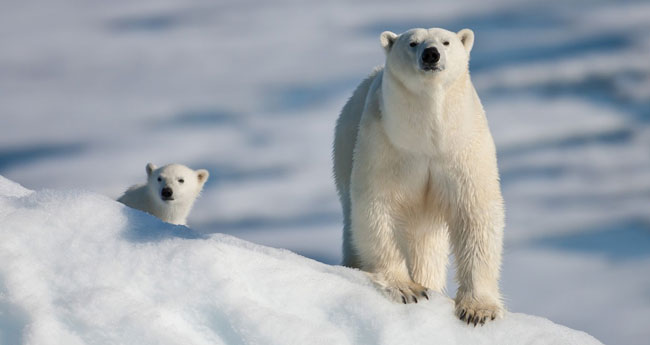
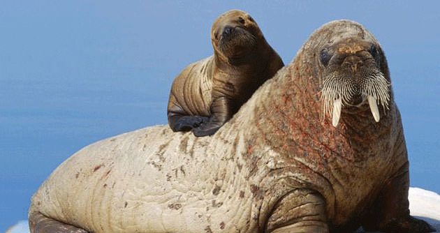

Arctic mammals are crucial to the Arctic ecosystem and are a vital resource for Inuit communities who rely upon healthy populations for sustenance.
The Arctic matters to the rest of the planet - as the driver of many of the world's climate and ocean systems, as the homeland of Indigenous Peoples who have inhabited the region for thousands of years, and as the site of some of the world's largest remaining intact ecosystems. At the same time, it is a place of rapid change. Ecosystems face increasing pressure from the combined effects of climate change, transboundary pollutants and increasing industrial development. Human societies across the Arctic are trying to respond to these changes in many ways. read more...
Baffin Bay is the site of extensive commercial fishing in both Greenland and Canada. Commercial fishing could harm healthy marine mammal populations through over-harvesting of fish that whales eat, physical destruction of key habitat and animals that collide with boats or become entangled in fishing gear. With so little known about the habitat of narwhal, it’s very difficult to determine whether current levels of fishing are sustainable for the overall ecosystem and that species. There’s also little information about the extent of regional cold water corals – increasingly recognized as rich habitat for many species even in icy, dark Arctic waters. Other factors that make it hard to predict how to set sustainable fishing levels are changes in fish populations, freshwater-saltwater mixing, the effects of ice loss on plankton blooms and increasing sea temperatures.